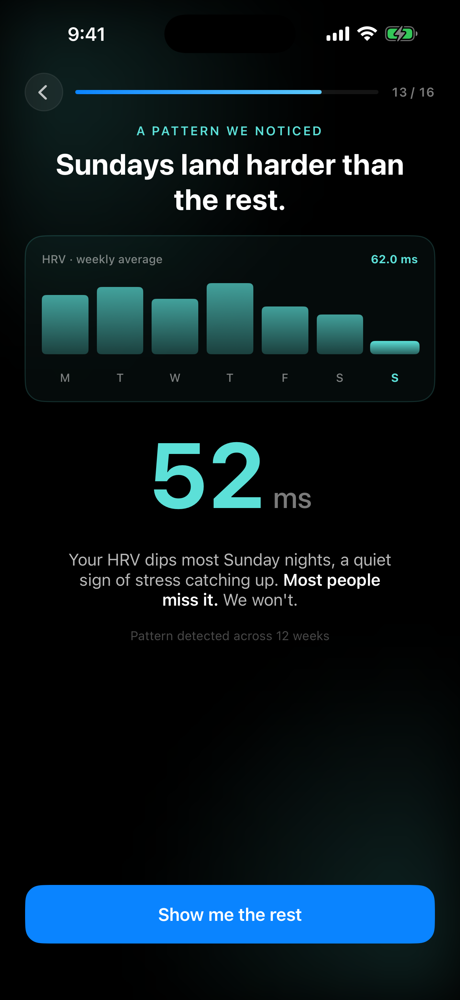
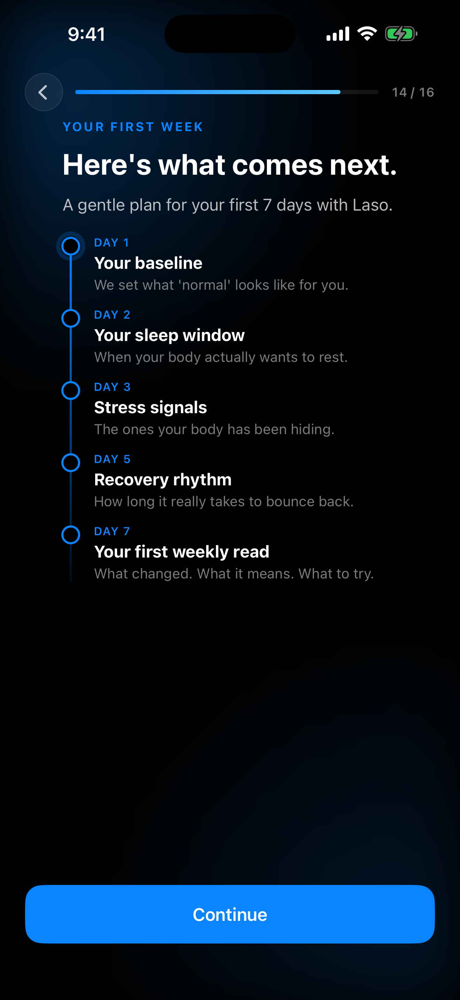
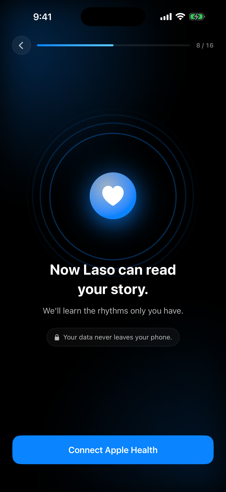
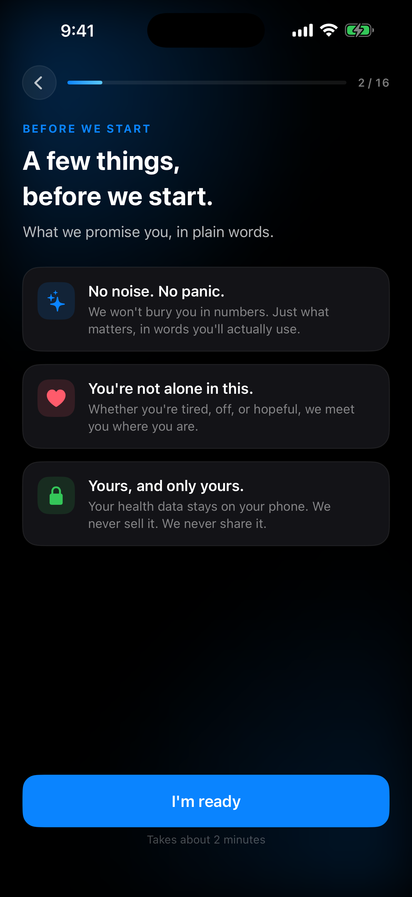

the percentage must be your own real number — computed from Laso users' HRV data, then served through the Remote Config copy system. A made-up "38% / 9%" is an FTC and App Store reject risk and breaks trust the second someone checks. If you do not have the number yet, run the cohort analysis first. The examples below are placeholders.
1
best spot
HRV reveal — "Sundays land harder"
Screen 13 · below the body line, above the CTA
Most relevant + most memorable

HRV line here
In 4 weeks, 38% of members like you raised their HRV by 9%.
example — swap for your real cohort number
Their own HRV (52 ms) and "Most people miss it. We won't." are already on screen. Dropping the peer outcome right under it pairs their number with a proven result — that is what they feel and remember.
2
First-week plan — "Here's what comes next"
Screen 14 · below the 7-day timeline
Commitment moment, before sign-in + paywall

People who followed this plan improved their sleep 14% in a month.
example — adapts to their goal, real cohort number
My take: strong choice — the best conversion spot. Anchored just above "Continue" so it is the last belief before they sign in and hit the paywall (not floating in the empty gap). The metric matches their Screen 4 goal — sleep goal shows a sleep stat, energy shows energy — so it actually relates. Still needs a real cohort number via Remote Config.
3
Bridge — "Now Laso can read your story"
Screen 8 · under the lede, before Connect
De-risks the Apple Health connect

proof line here
In 4 weeks, 38% of members raised their HRV by 9%.
example — swap for your real cohort number
The belief beat right before the "Connect Apple Health" tap. A proven peer result here pushes them to grant access.
4
Promise — "A few things, before we start"
Screen 2 · below the three promise cards
Fits "You're not alone", but early

count line here
Joined by 50,000+ people reading their own signals.
example — use your true member count, never rounded up
Matches the "You're not alone in this" promise card. Weaker than the others because nothing is invested yet, but lots of space and on-theme. Use a count here, not an HRV outcome.